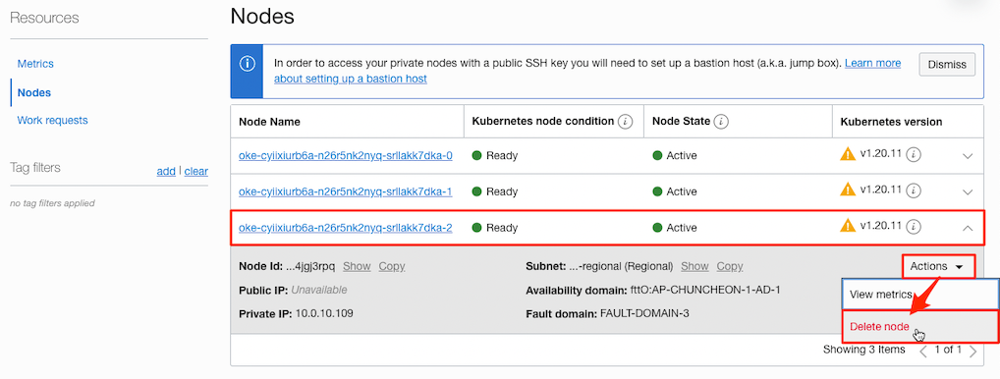
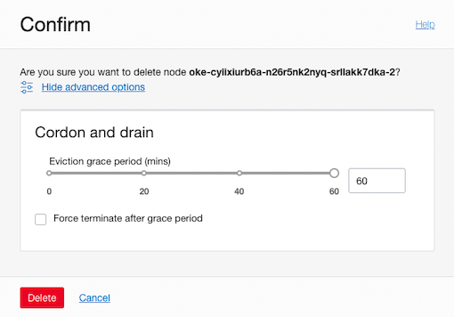
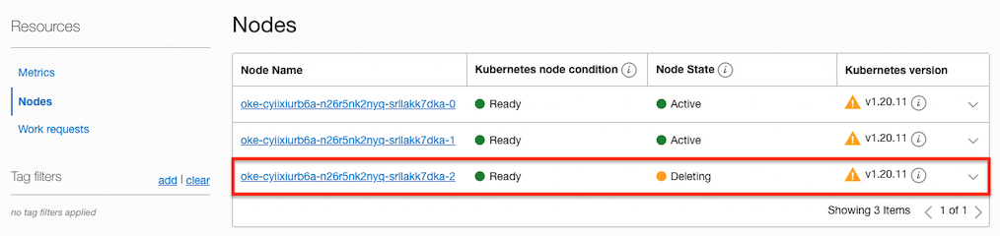

Support for worker node deletion, along with new cordon and drain options
업데이트 사항
이제부터 OKE 클러스터상의 특정 Worker Node를 삭제할 수 있게 되었습니다.
-
Worker Node 삭제시
Worker Node를 삭제할 때 실행중인 업무들의 이관을 위해 Cordon & drain 옵션을 제공합니다.

-
Eviction grade period
Grace period를 두는 것으로 기본값은 60분입니다. 새로운 Pod가 대상 Worker Node로 할당되지 않게 스케줄링에서 제외하고, 이미 할당되어 실행중인 Pod들을 다른 Worker Node로 다시 스케줄링하여 실행이 될때까지 준비시간을 두게 됩니다. Advanced Options에서 원하는 시간으로 변경할 수 있으며, 대기 없이 즉시 삭제하려는 경우 시간을 0으로 지정하면 됩니다.
해당 시간이전에 모두 이관되는 경우 대상 Worker Node는 바로 삭제됩니다.
-
Force terminate after grade period
Eviction grade period가 지난후에도 이관되지 못한 자원이 있는 경우, Worker Node를 강제로 Terminate 시킬지 여부를 선택합니다. 이 옵션을 선택하지 않은 경우에는, Eviction grade period가 지난후 대상 Node Pool은 Need attention 상태로 표시됩니다. 확인 후 별도 처리하면 되겠습니다.

-
삭제 예시
실행 중인 컨테이너가 많지 않고, 원활히 이관되어 지정한 시간 이전에 바로 삭제되었습니다.
winter@cloudshell:~ (ap-chuncheon-1)$ kubectl get nodes NAME STATUS ROLES AGE VERSION 10.0.10.109 Ready,SchedulingDisabled node 60d v1.20.11 10.0.10.217 Ready node 60d v1.20.11 10.0.10.44 Ready node 60d v1.20.11
-
이 글은 개인으로서, 개인의 시간을 할애하여 작성된 글입니다. 글의 내용에 오류가 있을 수 있으며, 글 속의 의견은 개인적인 의견입니다.